年明けの一コマー明けましておめでとうございますー [梅吉]
皆さま、明けましておめでとうございます。
あけまして・・・・・
梅吉さん、食器棚の扉を開けちゃいました(꒦ິ⌑꒦ີ)
ここは1日分のカリカリの入ったタッパーを保管しておく場所だったのに・・・
とりあえずテープ留めで対策しましたが
また一つ梅吉がいたずらしないようにものを保管できる場所が減っちゃったw
気を取り直して改めまして
謹賀新年
今年も活躍する気満々の梅吉をよろしくお願い致しますm(_ _)m
 ↑ガブッと一押し↑
↑ガブッと一押し↑
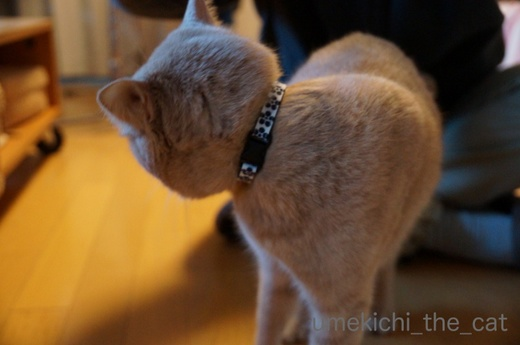
嫌な予感がして振り返る。
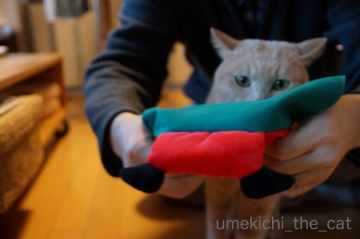
やっぱり来た。
目が諦めモードです(≧ω≦｡)
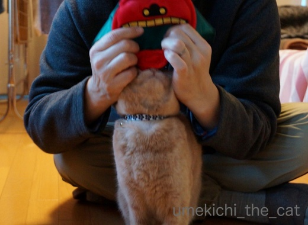
ベンツマークがいいねぇＯ(≧▽≦)Ｏ
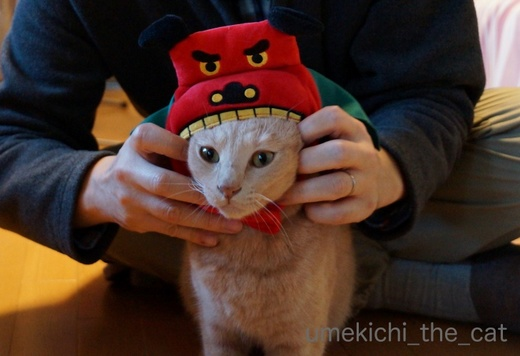
はい、装着〜＾＾
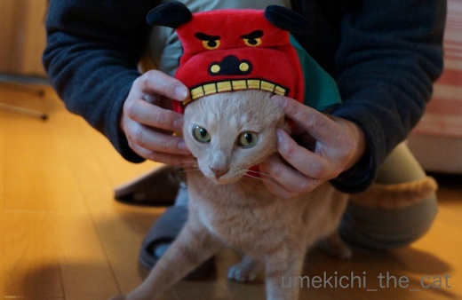
キュッと引き上げておきましょうか。
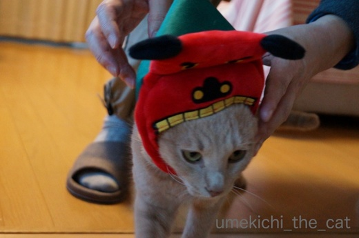
みなさまの頭をガブリとしに旅立つ梅吉。
しょっぱなから被り物記事になっちゃいました^^;
今年もぼちぼち更新していきますねー。
あけまして・・・・・
梅吉さん、食器棚の扉を開けちゃいました(꒦ິ⌑꒦ີ)
ここは1日分のカリカリの入ったタッパーを保管しておく場所だったのに・・・
とりあえずテープ留めで対策しましたが
また一つ梅吉がいたずらしないようにものを保管できる場所が減っちゃったw
気を取り直して改めまして
謹賀新年
今年も活躍する気満々の梅吉をよろしくお願い致しますm(_ _)m
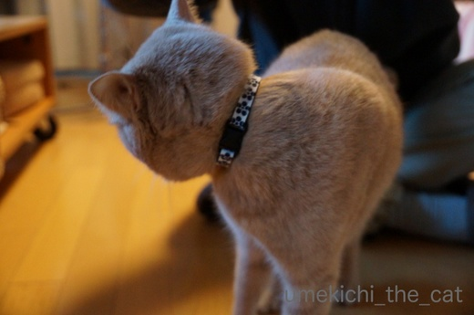
嫌な予感がして振り返る。
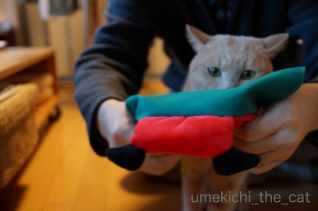
やっぱり来た。
目が諦めモードです(≧ω≦｡)
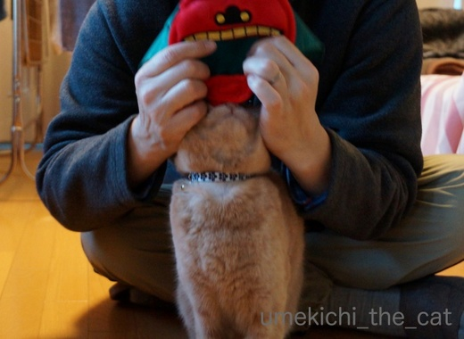
ベンツマークがいいねぇＯ(≧▽≦)Ｏ
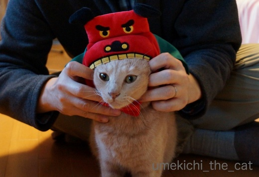
はい、装着〜＾＾
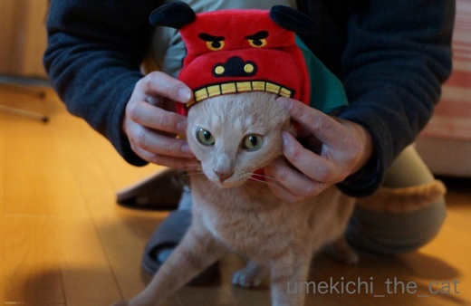
キュッと引き上げておきましょうか。
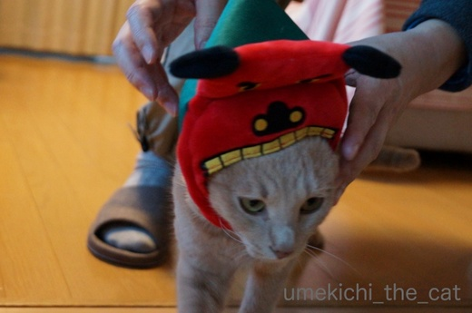
みなさまの頭をガブリとしに旅立つ梅吉。
しょっぱなから被り物記事になっちゃいました^^;
今年もぼちぼち更新していきますねー。
2018-01-01 13:39
nice!(75)
コメント(38)

カフェオレ色の梅吉

梅吉 2023年8月10日 永眠


梅吉と出会った譲渡会

犬猫の理由なき殺処分ゼロ
妄想広告
UMEKICHI 光

爆発的に早い！
時々攻撃的！
Thanks to Mr.Boss365
爆発的に早い！
時々攻撃的！
Thanks to Mr.Boss365

あけましておめでとうございます。
今年もよろしくお願いします。
チャンネル登録させていただきました(^^;
いきなりのかぶり物、やる気満々?ですね、梅吉さん(^^)
by riverwalk (2018-01-01 15:32)
riverwalkさん＞
あけましておめでとうございます。
今年もどうぞよろしくお願い致しますm(_ _)m
梅吉は年初からやる気マンですよ〜＾＾
（失）笑しながらお付き合いくださいね(^_－)☆
by ちぃ (2018-01-01 15:38)
あーあ、開けちゃった:-)
by tama (2018-01-01 15:40)
tamaさん＞
あけましておめでとうございます。
今年もどうぞよろしくお願い致しますm(_ _)m
開けられちゃいましたよー( ；∀；)
力と根性はあるもので・・・泣
by ちぃ (2018-01-01 15:51)
あけましておめでとぉ～ございます♪
今年もよろしくお願いします(#^.^#)
幸多い年になりますように♪
梅吉さん！上手に開けてますねぇ～（笑
伸びた姿勢がまた可愛い！！
ですが・・・困るのも確かですね(;^_^A
梅吉さんの活躍を期待しています！
by きぃ (2018-01-01 15:53)
明けましておめでとうございます。
梅吉さん、手先が器用なんですね。こりゃ大変だ。
うちの子はドアは自分で開けるものとは思っていないみたいですよ。
頭が悪くて、よかった(笑)。
今年もよろしくお願いします。
by nachic (2018-01-01 16:03)
きぃさん＞
あけましておめでとうございます。
今年もどうぞよろしくお願い致しますm(_ _)m
やられちゃいました・・・涙。
以前カリカリの入ったタッパーが床に落ちている時があったのです。
その時は私が扉を閉め忘れたんだなぁと思っていたのですが
犯にゃんがおりました！！
活躍も程々にしていただきたい・・・
by ちぃ (2018-01-01 16:04)
nachicさん＞
あけましておめでとうございます。
今年もどうぞよろしくお願い致しますm(_ _)m
器用、と言っていただけると聞こえも良くて嬉しいのですが
食い意地と執念が凄くって・・・^^;
お風呂のカラン（引き下げるタイプ）も一時いたずらする事があって
水が出っぱなしになっておりました(꒦ິ⌑꒦ີ)
まさか！と思う事をするので気が抜けませんっ。
by ちぃ (2018-01-01 16:20)
あけましておめでとうございます！って、開けちゃったのは食器棚？！(^▽^;)
ウチもあちこち突破されて、最終的に洋服を入れているクローゼットにカリカリ収納しています。
観音開きの重めの扉で今のところ開けられていません(^^)v
梅吉さん、いやな予感がしても逃げないのが偉い！親孝行！！
今年もどうぞよろしくお願いいたします。
by ゆきち (2018-01-01 16:34)
明けましておめでとうございます。
今年もどうぞよろしくお願いいたします。
梅吉さん、いきなりあけちゃいましたね(^o^)
でも、キリッとした顔が最高です!
by kou (2018-01-01 17:02)
あけましておめでとうございます。梅吉さん進化してますね~。うちでは戸棚に幼児対策用の両面テープで貼るプラスチックかんぬきを取りつけてるんですよ。中のものみんな食べられちゃうんです。梅吉さんの獅子舞うちにも来てくれないかなー。今年もよろしくお願いします。
by zombiekong (2018-01-01 17:30)
あけましておめでとうございます。
今年もよろしくお願いいたします。
by いっぷく (2018-01-01 18:18)
梅吉くん♡ 地上に飽きたら、いつの日か、お空を飛んでみませんか＾＾；
旧年中は、大変お世話になりました。
今年も、よろしくお願いいたしますm(_ _)m
by てんてん (2018-01-01 19:22)
あけましておめでとうございます。
梅吉くん、食器戸棚開け技公開から、被り物一部始終～
目つきがなんだか、プロになってきてますよね！？＾＾
今年もよろしくお願いします＾＾
by sana (2018-01-01 19:26)
明けましてお目出度うございます
本年も宜しくお願いしますm(__)m
梅吉さんかぶり物でもいやがらずに偉いですね(^^)
by ma2ma2 (2018-01-01 20:01)
明けましておめでとうございます。
梅吉さんもあけちゃってますね～ヽ(^o^)丿
あかりは、まだまだ開けるガッツが足りません＾＾；
梅吉さんは首輪も付けるし、被り物もOKなんて
オトナニャンコですね！いいな～♪
どうぞ今年もよろしくお願いいたします(*^^*)
by マーヤ (2018-01-01 22:32)
おめでとうございます！
見事に扉あけてますよねー。
半年後にはパソコンでブログ更新してそうやわー(^_^;)
by よーちゃん (2018-01-01 23:13)
明けましておめでとうございます。
本年もどうぞよろしくお願いいたします。 ^^)
扉を開ける梅吉さん、器用ですねー。
しかも、ぜんぜん違和感がありません。^^;
by yes_hama (2018-01-02 00:59)
開けていますね〜
左手をかけてグッと引いて、作法通りですね（キット）
次は冷蔵庫あたりを狙って、ビールなどぐいっと。
大丈夫、下僕殿のビールですから梅吉さん優先です（笑）
『謹賀新年』
お獅子のホォケタ顔と梅吉さんのキリッとした顔の対比が
おかしくて笑ってしまいました。
梅吉さん、大人の対応で素敵です。
by kiki (2018-01-02 01:06)
開けちゃいまして（笑）、もとい
明けちゃいましておめでとうございます。
本年もよろしくお願いいたします。
獅子舞吉くんになっちゃいましたか。
新年からいいものを拝ませていただきました^^
ああ、そうか！＞ガブリだけに！ うまいっ！
by Ja-Kou66 (2018-01-02 02:31)
あけましておめでとうございます。
今年もよろしくお願いします＾＾
引き戸は開けちゃうでしょうね。
赤ちゃんのイタズラ避けでも付けてみては？＾＾；
by ぽちの輔 (2018-01-02 07:01)
開けました！おめでとうございました！
いや違う〜！！
明けましておめでとうございます♪
昨年は素敵な出逢いがあり、とても有難く思っております(^^)♪
本年もどうぞよろしくお願い致します！！
梅吉は〜ん！！開けはったんやな〜w
ウチはそんな器用な事でけへんわー
今度教えてもらわんとな〜！
(いや、教えてもらわなくていいと思いますが…)
by くつしたにゃん (2018-01-02 12:19)
明けましておめでとうございます～！！
今年もすみちゃん一家をよろしくお願いしますです！！
梅吉さんと素敵な一年になりますよーに♪
by sumi-cyan (2018-01-02 15:12)
おめでとうございます！
今年も未だ見ぬ梅吉さまの魅力全開を楽しみにしています♪
(o･ｪ･)ﾉ[賀正]ヽ(･ｪ･o)
by Ginger (2018-01-02 15:25)
あけましておめでとうございます。
ここにあったはずだ…ボクのごはん、って知ってるんですよねぇ。
うちは1日7粒あげる歯磨きおやつの入った戸棚を開けたら
「振り返るとそこにいる」となります(^^;
by も〜 (2018-01-02 18:02)
明けましておめでとうございます。
本年もよろしくお願いいたします。
by yhiga-siura (2018-01-02 19:50)
あけられて困りましてございます（笑）
獅子舞だから頭ガブガブが仕事ですもんね♬。
梅吉さんとの楽しい日々、今年も覗かせて頂き
ます！「うっかりくま」改め「うりくま」より。
by うりくま (2018-01-02 21:54)
明けましておめでとうございます。
昨年中は、大変お世話になりました。 本年もよろしくお願い致します。
by ネオ・アッキー (2018-01-03 01:45)
何しても、可愛いものですね。
今年もよろしくお願い致します。
by yumibaba (2018-01-03 06:37)
新年おめでとうございます
梅吉さんさすがです。
今年も楽しみにしています(*^^*)
by ryang (2018-01-03 10:59)
あけましておめでとうございます。
本年もよろしくお願い申し上げます。
by Raccoon (2018-01-03 12:13)
遅ればせながら、本年も宜しくお願いいたしま〜す！
(^^)/
by KENT0mg (2018-01-03 12:31)
梅吉くん果敢に攻めますね！食器棚開けちゃうんだ。賢い!!
かぶりもの似合ってますよ！装着時に諦めてる感じがまたいい(*^^*)
本年もよろしくお願いします(^o^)丿
by palpal (2018-01-03 14:42)
ゆきちさん＞
未来への扉なら良かったのですが食器棚を開けられちゃいました( ；∀；)
梅吉にはこれ以上あちこち突破されないことを願うばかりです。
被り物に関しては最近ちょと付き合いが良くなって来たような・・・
ま、大阪の子ですからー！
今年もどうぞよろしくお願い致します＾＾
kouさん＞
また一つ芸が増えてめでたい、と思えば良いのでしょうか・・・^^;
今年もどうぞよろしくお願い致します＾＾
zombiekongさん＞
スットコランドにも開けちゃう子がいましたか・・・
プラスチックかんぬき・・・梅吉はそれ自体にもいたずらしそうだしなぁ。
とりあえず、テープで様子見しておきます。
今年もどうぞよろしくお願い致します＾＾
いっぷくさん＞
あけましておめでとうございます。
今年も梅吉をどうぞよろしくお願い致します＾＾
てんてんさん＞
お空、いいですねー。今年は宇宙に行かせて見たいかも！
今年もどうぞよろしくお願い致します＾＾
sanaさん＞
以前タッパーが床に転がっていたので
「閉め忘れたんだ」と思っていたのですが・・・
犯にゃんの現場を押さえました！
「こら〜っ！」というと「なんやー」と可愛いお顔^^;
もっとも「こら〜っ！」に怒気は皆無だし、呑気に動画撮っているしー。
いたずらやめないはずだわ・・・
今年もどうぞよろしくお願い致します＾＾
ma2ma2さん＞
獅子舞、かぶりこなしているでしょう？Ｏ(≧▽≦)Ｏ
今年もどうぞよろしくお願い致します＾＾
マーヤさん＞
はい、あけちゃいました・・・( ；∀；)
梅吉は食い意地とガッツの子なのでやり遂げましたよ！
今年はもう一段オトナになっていたずらを控えていただけないかと・・・
年末はお正月用のお花を飾って10秒でひっくり返しました(꒦ິ⌑꒦ີ)
今年もどうぞよろしくお願い致します(꒦ິ⌑꒦ີ)・・違った(^_－)☆
よーちゃん＞
梅吉、お正月にあけましてございました・・・
ブログ更新はまだですがおっとフェイスブックの記事を書いてましたよー。
記事止まりだったので今年はめざせ！投稿！！ですよん＾＾
ちなみに漢字も書いてました「案」って・・・
どうやって打ったのか謎！謎！！
今年もどうぞよろしくお願い致します＾＾
yes_hamaさん＞
すい〜っと開けてますよねー^^;
実は開けられては閉めを繰り返してこの動画を撮ったのは
梅吉3回目のトライくらいだったかな・・・
開け慣れて来ちゃいました(^▽^;)
怒らないで喜んでいる下僕がいけないのですよね！
でも面白かったですw
今年もどうぞよろしくお願い致します＾＾
kikiさん＞
なかなか美しい所作ですよね！
無駄のない動き、目的（カリカリタッパー）にまっすぐ進む姿勢
評価したいと思っております(≧ω≦｡)
普段からハイテンションの梅吉がビールで酔っ払ったら・・・・
本当に虎になりそうですよー！！
今年もどうぞよろしくお願い致します＾＾
Ja-Kou66さん＞
開けられちゃいまして参りましてございます( ；∀；)
この執念を良い方向に持って行ってひとかどのにゃんこになって
いただきたい・・・・
獅子舞吉は頼まれなくてもガブガブしますから！
出会った際はどうぞお気をつけください。
逃げると後ろから太ももにガブしますので逃げても無駄ですよ(^_－)☆
今年もどうぞよろしくお願い致します＾＾
ぽちの輔さん＞
結構重さのある扉なので開けると思っていませんでした〜(꒦ິ⌑꒦ີ)
食い意地と執念の勝利、なのでしょうね・・・
100均一にも対策グッズがあったような。
チェックして来ますねー！
今年もどうぞよろしくお願い致します＾＾
by ちぃ (2018-01-04 08:28)
ご挨拶が遅くなりましたが
あけましておめでとうございます( ^ω^ )
今年もどうぞよろしくお願いいたします(_ _)
梅吉くん、新年早々新たな技を披露ですね(⌒-⌒; )
でもその技はお父さんとお母さんには秘密にしておいた方が良かったんじゃw
今年も笑顔（笑い？w）あふれる素敵な一年になりますように♪( ´▽｀)
by ニッキー (2018-01-04 11:26)
これぞまさに、あけました！おめでとうございます！って感じの
梅吉君ですね(笑)
こちらは困っちゃうけどｗｗ
梅吉君にガブガブしてもらうために頭さっそく差し出します！^^
穏やかなお正月でしたか？
本年もどうぞよろしくお願いします^^
by リュカ (2018-01-04 12:21)
くつしたにゃんさん＞
開けました！あまりおめでたくないんです・・・^^;
我が家の食い意地の張ったいたずら坊主には困ったものです！
姐さんに余計なことを伝授しないように諭しておきますねー。
日々進化する梅吉、今年もどうぞよろしくお願い致します＾＾
sumi-cyanさん＞
今年もどうぞよろしくお願い致しますm(_ _)m
Gingerさん＞
今年もどんなことをしでかしてくれるのか楽しみでもあり
ビクビクでもありです〜^^;
今年もどうぞよろしくお願い致します＾＾
も〜さん＞
我が家もフードの入ったストッカーを収納してある納戸を開けると
「振り返るとヤツがいる」状態です。
ティッシュボックスを収納している納戸でもあるので
うかうかティッシュも出せやしません・・・・
今年もどうぞよろしくお願い致します＾＾
yhiga-siuraさん＞
あけましておめでとうございます。
本年もどうぞよろしくお願い致します＾＾
うりくまさん＞
おお〜！どなた？と思いましたよー！
何年か後「なぜ“うりくま”さんなんですか？」との問いを見て
「私は知っている！！」とほくそ笑むことが出来そうです＾＾
梅吉獅子舞、毎朝寝入っている私の顎をガブガブします・・・
頭じゃなくても健康でいられるんだ、と思う今日この頃www
ネオ・アッキーさん＞
あけましておめでとうございます。
本年もどうぞよろしくお願い致します＾＾
yumibabaさん＞
「やめてよー！」と言いながら（笑いながら）
可愛くて動画を撮ってしまいました(≧ω≦｡)
なかなか本気で怒れないダメな飼い主です・・・www
本年もどうぞよろしくお願い致します＾＾
ryangさん＞
梅吉が今年はどんな進化を遂げるのか楽しみなようでもあり
不安なようでもある飼い主です^^;
本年もどうぞよろしくお願い致します＾＾
Raccoonさん＞
あけましておめでとうございます。
本年もどうぞよろしくお願い致します＾＾
KENT0mgさん＞
今年も梅吉の活躍にご期待ください！
本年もどうぞよろしくお願い致します＾＾
palpalさん＞
今年も攻めの姿勢で行く梅吉のようです・・・( ；∀；)
元気であれば良いんですけどねー！！
キュッと締めてるの良いでしょー＾＾
上げとかないと垂れちゃうし！（それはわたし・・・）
本年もどうぞよろしくお願い致します＾＾
by ちぃ (2018-01-04 23:32)
ニッキーさん＞
梅吉も「わし、しっぱいした」と思っていることでしょう(⌒-⌒; )
今年も梅吉がどんな面白い出来事をしでかしてくれるのか
楽しみなようでもあり不安なようでもあり・・・
日々進化する梅吉、今年もどうぞよろしくお願い致します＾＾
リュカさん＞
また芸が増えてうれしいやら困ったやらです^^;
頭ガブは寝入っているところをやられるかもしれません。
私は毎朝あごガブで目覚めますから！！
日々進化する梅吉、今年もどうぞよろしくお願い致します＾＾
by ちぃ (2018-01-04 23:37)